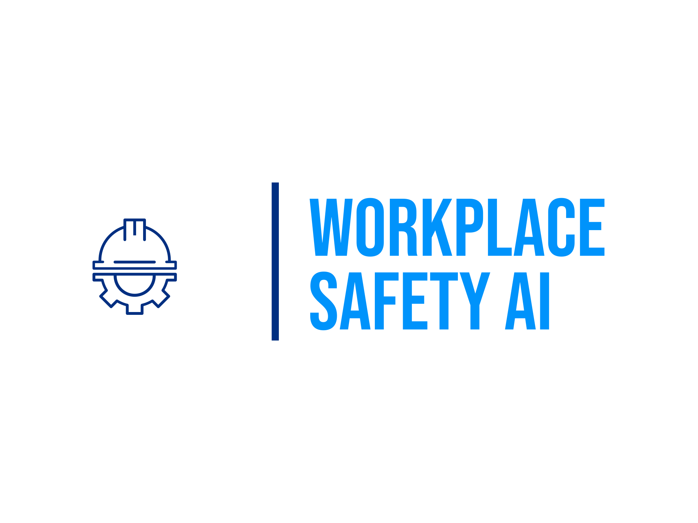

Computer Vision · Deep Learning · Workplace Safety
Archived — This project is no longer under active development.
The project served as an opportunity to explore the application of computer vision and deep learning to a real-world industrial problem.
Workplace Safety AI is an exploratory AI project focused on applying computer vision and deep learning to workplace safety through Personal Protective Equipment (PPE) detection.
Developed as part of the UM6P Explorer program, the project explored how AI-powered visual monitoring could potentially assist in identifying safety compliance issues in industrial environments.